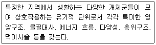
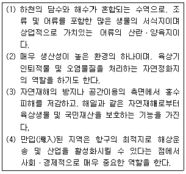
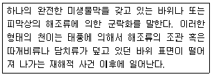
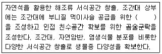
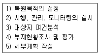
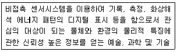
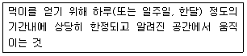
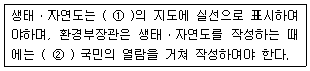
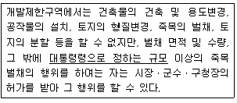
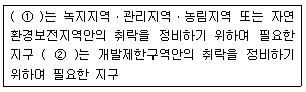

자연생태복원기사(구) (2009-05-10 기출문제)
1과목: 환경생태학개론
1. 토양동물이며 토양의 통기성과 보수성을 증가시키고 비옥도를 높여주는 유용한 동물로 “자연의 쟁기”라고 불리는 것은?
- 토양곤충
- 지렁이
- 선충
- 두더지
(정답률: 73%)

2. 생태학 연구에 있어서 개념 또는 관점에 따라 분류되는 생태학의 종류가 아닌 것은?
- 경관생태학
- 개체군생태학
- 군집생태학
- 식물생태학
(정답률: 64%)
3. 다음 설명은 무엇에 대한 설명인가?

- 군집
- 생태계
- 서식처
- 경관요소
(정답률: 46%)
4. 호수의 물리적 특징과 생물의 분포에 따른 수역과의 설명이 부적합한 것은?
- 연안대(littoral zone) - 기슭, 그리고 빛이 호수 바닥까지 미치는 인접한 수역을 포함
- 준조광대(limnetic zone) - 빛이 효과적으로 투과되는 깊이(공보상 깊이)ᄁᆞ지 이르는 수역
- 심연대(profundal zone) - 빛이 효과적으로 투과되며, 광합성이 호흡을 초과하는 수역
- 무광대(aphotic zone) - 빛이 영구적으로 투과되지 않는 수역
(정답률: 알수없음)
5. 수중 용존산소량(dissolved oxygen)에 관한 설명 중 옳지 않은 것은?
- 수온약층에서 급격히 증가한다.
- 물속에 용해되어 있는 산소량이며 단위는 주로 ppm으로 나타낸다.
- 공기와 직접 접하고 광합성이 활발한 표수층에서 가장 높다.
- 심수층에서는 소량만 존재한다.
(정답률: 알수없음)
6. 생물의 사체나 배설물로부터 에너지 흐름이 시작되는 먹이사슬은?
- 방목 먹이사슬
- 부니 먹이사슬
- 육상 먹이사슬
- 해양 먹이사슬
(정답률: 알수없음)
7. 옥상 생물군계에 있어서 환경의 연평균 강우량을 낮은 곳에서 높은 곳으로 나열한 것은?
- 사막 → 초원 → 낙엽수림 → 열대우림
- 낙엽수림 → 침엽수림 → 툰드라 → 열대우림
- 사막 → 초원 → 침엽수림 → 툰드라
- 낙엽수림 → 툰드라 → 초원 → 열대우림
(정답률: 64%)
8. 부영양화의 정도 및 증상 감소를 위한 가장 효과적인 방법은?
- 화학적 처리
- 강제순환
- 영양물질 차단
- 저질토 도표
(정답률: 50%)
9. 경쟁의 결과로 형질분화가 나타난다는 것이 잘 밝혀지지 않고 있는데 그 이유가 아닌 것은?
- 이소적인 두 종에서 어느 정도 변이가 일어났다면 같은 지역에서 함께 살더라도 충분히 공존할 수 있다.
- 표현형의 변화가 때로는 중요하게 작용한다.
- 몇 가지 수학적 모델에 의하면 경쟁을 통한 공진화의 결과가 필연적으로 형질분화를 유발시키는 것은 아니며, 경우에 따라서는 형질수혐도 일어날 수 있다.
- 만일 두 종이 비슷하고 한 종이 형질분화를 일으킬 기회가 없다면 군집에서 두 종 모두 도태되어 버린다.
(정답률: 55%)
10. 다음의 [보기] 중에서 하구역 환경의 특성에 속하는 것을 모두 고른 것은?

- (1), (3)
- (1), (4)
- (1), (2), (3)
- (1), (2), (3), (4)
(정답률: 59%)
11. 식물에 의해 단위시간, 단위면적당 만들어지는 생체량을 무엇이라 하는가? (단, 단위로는 에너지 단위(calㆍm-2ㆍday-1)나 무게(gCㆍm-2ㆍy-1)를 사용한다.)
- 생물학적 생산력(Productivity)
- 현존량(Standing crip)
- 영양단계(Trophic level)
- 2차 생산(Secondary production)
(정답률: 46%)
12. 두 종 개체군 사이에는 한 종이 다른 종을 먹이로 이용하는 영양상의 상호작용과 비 영양상의 상호작용이 있는데 비 영양상의 상호작용에 해당하는 것은?
- 중립
- 부생
- 기생과 질병
- 포식
(정답률: 알수없음)
13. 다음에서 기생생물에 속하지 않는 것은?
- 진드기
- 비루스
- 리케치아
- 달팽이
(정답률: 60%)
14. 다음 내용은 해안가의 암반에 있어서의 몇 차 천이에 해당하는가?

- 1차 천이
- 2차 천이
- 3차 천이
- 4차 천이
(정답률: 80%)
15. 거대한 자연의 열린계(open system)를 연구할 때 나타나는 자생적 천이에서 예상되는 군집구조와 기능발달에 관한 설명으로 틀린 것은?
- 천이단계와 함께 식물, 동물의 종구성은 변한다.
- 다양성은 천이와 함께 증가하는 경향이 있다.
- 생물량과 유기물질의 현존량은 천이와 함께 증가한다.
- 순생산량 증가, 호흡 증가는 천이의 뚜렷한 특징이다.
(정답률: 22%)
16. 다음 용어들 중 생물과 무생물을 모두 포함하는 용어는?
- 세스톤(seston)
- 넥톤(nakton)
- 뉴스톤(neuston)
- 플랑크톤(plankton)
(정답률: 40%)
17. 생태계가 발전단계에서 성숙단계로 진행됨에 따라 기대되는 특성을 바르게 설명한 것은?
- 순생산/군집호흡(P/R비)은 발전단계에서는 1에 가까워지나, 성숙단계에서는 1보다 크거나 작다.
- 총생산/현존생체량(P/B비)은 발전단계에서는 낮으나, 성숙단계에서는 높다.
- 유지된 생체량/단위에너지 호흡(B/E비)은 발전단계에서는 높으나, 성숙단계에서는 낮다.
- 먹이연쇄는 발전단계에서 직선적이고 초식먹이연쇄가 우세하나, 성숙단계에서는 망상이고 부식연쇄가 우세하다.
(정답률: 알수없음)
18. 우리나라 도시생태계의 생태환경적 일반특성으로 가장 거리가 먼 것은?
- 도심 건조 및 홍수, 그리고 기온의 열섬효과와 같은 도시의 독특한 중기후적 특성
- 서식처의 질적 저하를 초래하는 이산화탄소에 의한 대기오염과 토양오염
- 야생생물종을 위한 서식처의 양적, 질적 쇠퇴와 절대적으로 부족한 공간 영역
- 귀화식물종 및 왜래식물종의 높은 출현율과 구성비
(정답률: 19%)
19. 다음 중 건생식물(Xerophytes)이 아닌 것은?
- 선인장
- 아스파라거스
- 부들
- 아카시아
(정답률: 알수없음)
20. 국제적으로 중료한 습지, 특히 물새 서식처를 보호하기 위해 1971년 이란의 카스피해 남부해안에 있는 한 도시에서 채택한 협약의 명칭과 우리나라가 가입한 시기는?
- 람사협약, 2002년
- CIATES협약, 1997년
- 람사협약, 1997년
- CIATES협약, 2002년
(정답률: 알수없음)
2과목: 환경계획학
21. 다음 녹지네트워크의 구성요소를 점요소, 선요소, 면적요소로 구분할 때 면적요소에 해당하는 것은?
- 하천
- 생태통로
- 가로수
- 서울의 남산
(정답률: 알수없음)
22. 자연환경보전법상 생태ㆍ경관보전지역의 지정에 사용하는 지형도는?
- 1:5000 이상의 지형도
- 1:5000 이상의 지형도로서 지적도가 함께 표시된 것
- 1:25000 이상의 지형도
- 1:25000 이상의 지형도로서 지적도가 함께 표시된 것
(정답률: 46%)
23. 도시관리계획 결정의 고시일로부터 얼마까지 국토의 계획 및 이용에 관한 법률에 따른 지형도면의 고시가 없는 경우에는 그 몇 년이 되는 다음날에 그 도시관리계획 결정은 효력을 상실하는가?
- 1년
- 2년
- 3년
- 10년
(정답률: 40%)
24. 국토의 계획 및 이용에 관한 법률상 용도지역안의 건폐율 최대한도는 관할구역의 면적 및 인구규모, 용도지역의 특성 등을 고려하여 규정되나, 지방자치단체의 조례가 아닌 대통령령으로 정한 용적률 최대한도 기준으로 틀린 것은?
- 보전관리지역 : 80% 이하
- 생산관리지역 : 80% 이하
- 계획관리지역 : 80% 이하
- 자연환경보전지역 : 80% 이하
(정답률: 50%)
25. 다음 중 지구 온실효과를 일으키는 기체에 해당하지 않는 것은?
- CO2
- H2
- CFCs
- CH4
(정답률: 알수없음)
26. 우리나라의 용도지역체계에 대한 설명으로 부적합한 것은?
- 국토의 계획 및 이용에 관한 법률에서는 전 국토를 도시지역, 관리지역, 농림지역, 자연환경보전지역의 4대 용도지역으로 설정하고 있다.
- 경관지구ㆍ미관지구 또는 고도지구안에서의 건축법관련규정에 의한 리모델링이 필요한 건축물에 대하여는 규정에 의하여 건축물의 높이ㆍ규모 등의 제한을 완화하여 제한할 수 있다.
- 도시지역, 관리지역, 농림지역 또는 자연환경보전지역으로 용도가 지정되지 아니한 지역에 대해서는 자연환경보전지역에 관한 규정을 적용한다.
- 용도지역ㆍ지구ㆍ구역 등에서의 행위제한은 국토해양부와 환경부에서 집중 관리한다.
(정답률: 60%)
27. 특별시ㆍ광역시ㆍ시 또는 군의 개발ㆍ정비 및 보전을 위하여 수립하는 토지이용ㆍ교통ㆍ환경ㆍ경관ㆍ안전ㆍ산업ㆍ정보통신ㆍ보건ㆍ후생ㆍ안보ㆍ문화 등에 관한 계획을 가리키는 것은?
- 도시관리계획
- 광역도시계획
- 국토종합계획
- 지구단위계획
(정답률: 40%)
28. 토지환경성평가의 과정으로 맞는 것은?
- 사전환경성 평가
- 환경적합성 분석
- 생태적 수용력 분석
- 토지적성평가
(정답률: 20%)
29. 다음 중 식생천이(식생천)의 진행 과정으로 적합한 것은?
- 나지 → 1, 2년생 초본기 → 관목림기 → 다년생 초본기 → 호양성 교목림기 → 내음성 교목림기
- 나지 → 관목림기 → 1, 2년생 초본기 → 다년생 초본기 → 호양성 교목림기 → 내음성 교목림기
- 나지 → 1, 2년생 초본기 → 다년생 초본기 → 관목림기 → 호양성 교목림기 → 내음성 교목림기
- 나지 → 1, 2년생 초본기 → 다년생 초본기 → 관목림기 → 내음성 교목림기 → 호양성 교목림기
(정답률: 알수없음)
30. 오존층 파괴물질의 규제에 관한 국제협약으로서 오존층 파괴물질의 생산과 소비를 점진적으로 감축하고 궁극적으로 완전히 제거하려는 목표를 설정한 국제협력 프로그램으로 맞는 것은?
- 기후변화협약
- 몬트리올 의정서
- 람사협약
- 생물다양성협약
(정답률: 73%)
31. 도시지역 비오톱의 생태적 기능에 해당되지 않는 것은?
- 자연학습교육 및 체험장
- 도시민의 여가 및 휴식공간
- 환경오염에 대한 생태적 지표
- 난개발 방지를 위한 개발유보지
(정답률: 73%)
32. 우리나라 국가기본도로 사용되고 있는 1/25000 축척 지형도 한 장은 1/5000 지형도 몇 장을 붙인 것과 같은 면적인가?
- 25장
- 20장
- 10장
- 5장
(정답률: 70%)
33. 직ㆍ간접적으로 이해관계가 있는 시민들이 환경계획과정에 주체적으로 참여하는 일체의 행위를 말하며, 모든 시민에게 계획이나 의사결정과정에 참여의 기회를 넓힘으로써 시민이 원하는 바가 계획에 반영되게 하는 방법은?
- 시민참여형 환경계획
- 지역참여형 환경계획
- 정부참여형 환경계획
- 지방자치단체참여형 환경계획
(정답률: 82%)
34. 다음의 토지이용 형태 중 강우시 물질 유실량이 많아지는 순으로 배열된 것은?
- 습지＜숲＜밭＜목초지＜도시
- 숲＜습지＜목초지＜밭＜도시
- 숲＜목초지＜습지＜밭＜도시
- 습지＜숲＜목초지＜밭＜도시
(정답률: 47%)
35. 산ㆍ하천ㆍ습지ㆍ호소ㆍ농지ㆍ도시ㆍ해양 등에 대하여 자연환경을 생태적 가치, 자연성, 경관적 가치 등에 따라 등급화하여 자연환경보전법의 규정에 의하여 작성된 지도의 명칭은?
- 생태ㆍ자연도
- 녹지자연도
- 국토생태현황도
- 자연환경현황도
(정답률: 82%)
36. 자연환경보전법에 의한 ‘한국자연환경보전협회’ 가 할 수 있는 사업이 아닌 것은?
- 자연환경의 실태 및 보전방안에 관한 조사ㆍ연구
- 훼손된 생태계나 종의 복원, 소생태계의 조성 등 생물 다양성의 보전
- 중요 야생동ㆍ식물 또는 생태계를 해당 지방자치단체의 상징종(象徵琮) 또는 상징생태계로 지정ㆍ보전
- 자연환경보전에 관한 영상물의 제작 및 출판 등 자연교육과 홍보
(정답률: 40%)
37. 다음 중 생태마을을 조성하기 위한 마을계획에서 공간배치 계획시 중요하게 고려해야 할 사항으로 거리가 먼 것은?
- 자연에너지를 잘 이용할 수 있는 배치
- 자연생태게 질서를 훼손하지 않는 배치
- 화녕에 민감한 지역을 우선 배치
- 자연경관과 조화되는 배치
(정답률: 70%)
38. 어메니티 플랜의 기본방향에 대한 설명이 잘못된 것은?
- 지역의 자연환경 및 인공환경의 상태를 청결하게 하여 지역을 깨끗하고 조용하게 유지한다.
- 주민들이 환경을 만들어가고, 일산에서 많이 접하도록하여 친근함을 느낄 수 있는 분위기를 조성한다.
- 지역이 보유하고 있는 유형 및 무형의 문화자원을 발굴하고, 보호ㆍ육성 한다.
- 행정관청이 주도적으로 지침을 만들고 주민들은 이 지침에 일사불란하게 따르도록 한다.
(정답률: 75%)
39. 자연환경보전기본계획의 6대 실천목표에 포함되지 않는 것은?
- 자연환경보전 관리기반 구축
- 친환경적 국토 관리
- 자연자산의 일시적인 이용
- 남ㆍ북한 및 국제협력 강화
(정답률: 60%)
40. 다음 중 도시생태계의 특징을 잘못 설명한 것은?
- 사회ㆍ경제ㆍ자연의 결합으로 성립되는 복합생태계(com plex ecosystem)라 할 수 있다.
- 자연 시스템과 인위적 시스템 상호간의 에너지 및 물질교환에 의해 그 기능이 유지되고 있다.
- 대도시생태계는 인공적인 요소가 많지만 균형적인 물질 순환체계를 갖추고 있다.
- 인위적인 시스템은 그 기능을 유지하기 위해 자연 시스템으로부터 많은 양의 에너지와 물질들을 조달 받은 뒤 재생 불가능한 이용가치가 없는 에너지로 전환시켜 방출한다.
(정답률: 64%)
3과목: 생태복원공학
41. 하부층인 세립미사질 토층에 파일을 박아 하단부 투수층까지 연결한 후 파일 파이프 안에 모래, 사질양토, 자갈 등을 넣어 배수를 원활히 하는 공법을 무엇이라고 하는가?
- 사구법
- 사주법
- 치환법
- 객토법
(정답률: 59%)
42. 총체적 기능을 갖는 여러 형태의 숲을 환경보전림이라고 한다. 다음 중 환경보전림의 기능이 아닌 것은?
- 환경정화기능
- 연담(conurbation)현상 촉진기능
- 생태계 유지기능
- 안정성 유지기능
(정답률: 90%)
43. 생물 종 다양성의 증감에 관여하는 요소에 대한 설명 중 틀린 것은?
- 서식지 훼손 또는 간섭은 종 다양성을 감소시키거나 증가시킬 수 있다.
- 서식지가 격리되면 종 다양성은 감소한다.
- 종 다양성은 서식지의 연륜이 많을수록 감소한다.
- 종 다양성은 서식지 면적이 클수록 증가한다.
(정답률: 70%)
44. ‘종자분사파종’ 에 대한 설명으로 적합하지 않은 것은?
- 종자분사파종은 한랭도가 적고 토양 조건이 어느 정도 양호한 비탈면에 한하여 적용한다.
- 강우에 의한 종자유실을 막기 위해 염화비닐 용액이나 우레탄계 수용성 수지와 같은 무색 침식방지용 양생제를 사용한다.
- 섬유류는 물 4L에 250g/m2를 표준으로 사용한다.
- 발생기대본수는 초본 위주만의 군락은 5000~10000 본/m2를 표준으로 한다.
(정답률: 20%)
45. 산림식생복원을 위한 질소고정식물들로만 바르게 짝지워진 것은?
- 아카시나무, 자귀나무, 사방오리나무
- 아카시나무, 작살나무, 떡갈나무
- 소나무, 싸리나무, 떡갈나무
- 소나무, 물오리나무, 서어나무
(정답률: 67%)
46. 구조적 특성에 따른 습지유형 중 생물다양성이 높고, 갈대, 부들 등과 같은 정수식물이 우점인 습지는?
- 산성습원(Bog)
- 알칼리성습원(Fens)
- 늪(Marshes)
- 수변습지(Rioarian Wetlands)
(정답률: 39%)
47. 야생동물 이동통로 조성절차에서 계획 및 설계단계의 내용이 아닌 것은?
- 위치의 선정
- 유형의 선정
- 유지관리방안작성
- 제원의 설정
(정답률: 50%)
48. 강산성 토양에서 과잉되기 쉬운 성분으로 이 성분의 과잉이 P 결핍 및 Mn 과잉, K 결핍 등에 의해 영양장해가 발생함으로써 식물에 막대한 피해를 가져다주는 이 성분은?
- 철
- 마그네슘
- 아연
- 알루미늄
(정답률: 16%)
49. 토양 비옥도(肥沃度)에 대한 설명으로 옳은 것은?
- 식물의 생산량을 지배하는 토양학적 인자를 비옥도라 한다.
- 식물의 생산량을 높이기 위해서는 비옥도의 외적 요인인 지력(地力)을 높여야 한다.
- 토양부식이 적을수록 토양의 생산력과 지력이 커진다.
- 토양교질물이 많은 토양일수록 보수력이 떨어지며, 식물 생육에 필요한 각종 식물영양분의 간직하는 힘이 적어진다.
(정답률: 65%)
50. 식물의 생육을 위한 토심은 생존 최소 토심과 생육 최소 토심으로 구분하는데, 성상별 최소 토심(cm)이 맞게 나열된 것은?
- 초화류 : 15, 소관목 : 30, 천근성 교목 : 45
- 초화류 : 15, 소관목 : 30, 천근성 교목 : 60
- 초화류 : 30, 소관목 : 60, 천근성 교목 : 90
- 초화류 : 30, 소관목 : 60, 천근성 교목 : 150
(정답률: 알수없음)
51. 생태 숲을 조성할 때는 주변지역의 양호한 식생군락을 모델로 조성하여야 한다. 다음 중 생태 숲 조성시 중요도가 가장 낮은 것은?
- 지형 및 표토의 보전
- 각종 인위적인 시설물의 제한
- 수관 면적율
- 관찰로 확보
(정답률: 55%)
52. 원래의 상태 혹은 위치, 훼손되지 않은 온전한 상태로 되돌리는 활동을 무엇이라고 하는가?
- 복구(reprisal)
- 복원(restoration)
- 회복(rehabilitation)
- 재생(reclamation)
(정답률: 알수없음)
53. 하천의 호안 기능을 유지하기 위한 방법이 아닌 것은?
- 그린매트릭스 조성법
- 복토공법
- 녹화큰크리트법
- 식생호안법
(정답률: 34%)
54. 다음 중 ( )안에 적합한 것은?

- 통통마디군락
- 해홍나물군락
- 갈대군락
- 칠면초군락
(정답률: 25%)
55. 고등식물이 자신을 지키기 위하여 생산ㆍ배출하는 화학 물질로 인하여 동종ㆍ이종의 식물, 미생물, 동물에 미치는 영향을 무엇이라 하는가?
- 타감작용
- 방어작용
- 초화작용
- 완충작용
(정답률: 62%)
56. 자연환경복원 과정의 순서로 올바른 것은?

- 1) → 3) → 4) → 5) → 2)
- 3) → 4) → 1) → 5) → 2)
- 4) → 2) → 5) → 1) → 3)
- 2) → 4) → 1) → 5) → 3)
(정답률: 50%)
57. 최대 침투능이 100mm/hr인 지역에 강우강도 90mm/hr로 비가 왔을 때, 지표유출량이 30mm/hr이었다. 해당 지역 투수능은 얼마인가?
- 70mm/hr
- 60mm/hr
- 30mm/hr
- 10mm/hr
(정답률: 알수없음)
58. 다음 중 하천수질정화 방법으로 부적당한 것은?
- 스크린법
- 역간접촉법
- 수생식물에 의한 수질정화법
- 수온상승법
(정답률: 64%)
59. 영양단위의 최상위에 위치하는 대형포유류나 맹금류 등 서식에 넓은 면적을 필요로 하며, 이 종을 지키면 많은 종의 생존이 확보된다고 생각되어 생태계 보전 및 복원의 목표가 되는 종군은 무엇인가?
- 지표종
- 핵심종
- 상징종
- 우산종
(정답률: 50%)
60. 곤충류의 서식처 조성기법 중에서 다공질 공간 제공 기법이 있는데 그 방법으로 부적합한 것은?
- 다공질 콘크리트 쌓기
- 고사목 배치
- 통나무 쌓기
- 돌무더기 놓기
(정답률: 75%)
4과목: 경관생태학
61. 숲에 암도와 등산로가 많아지면 생태계의 종 다양성 측면에서 바람직하지 못하다. 그 이유로 가장 적합한 것은?
- 내부종이 늘어나고 가장자리 종인 덩굴식물이 줄어든다.
- 내부종이 줄어들고 가장자리 종인 덩굴식물이 줄어든다.
- 내부종이 늘어나고 가장자리 종인 덩굴식물이 늘어난다.
- 내부종이 줄어들고 가장자리 종인 덩굴식물이 늘어난다.
(정답률: 84%)
62. 지구관측위성 Landsat TM의 근적외선 영역(파장 0.76~0.90 μm)을 이용한 응용분야는 무엇인가?
- 식생유형, 활력도, 생체량 측정, 수역, 토양 수분 판별
- 물의 투과에 의한 연안역 조사, 토양과 식생의 판별, 산림유형 및 인공을 식별
- 광물과 암석의 분리
- 식생의 스트레스(stress) 분석, 열추정
(정답률: 알수없음)
63. 경관생태학의 관점에서 볼 때 큰 조각(patch)과 작은 조각(patch)의 생태적 가치에 대한 설명으로 틀린 것은?
- 큰 조각은 대수층과 호수의 수질보호에 유리하다.
- 큰 조각은 주변의 바탕이나 작은 조각으로 전파될 종의 공급원이 되어 메타개체군 유지에 공헌한다.
- 작은 조각은 바탕의 이질성을 중대시켜 토양침식을 감소시키고, 피식자가 포식자로부터 피할 수 있는 공간을 제공한다.
- 작은 조각은 환경 변화에 따라 흔히 일어나기 쉬운 종의 사며을 완충해 준다.
(정답률: 37%)
64. 고도 832km에서 지구의 폭 117km를 일시에 관측하며, 26일 마다 동일 위치로 돌아오는 태양동기 준회귀궤도를 가지고 있는 우성으로서 HRV/XS의 해상력이 약 20m2 인 위성은?
- Landsat MSS
- Landsat TM
- SPOT
- MOS-1
(정답률: 알수없음)
65. 유형분류는 전체적으로 수행하고, 조사 및 평가는 동일 유형(군) 내 대표성이 있는 유형을 선택하여 추진하는 방법은 비오톱 지도화 방법 중 어떤 방법에 대한 것인가?
- 선택적 지도화
- 배타적 지도화
- 대표적 지도화
- 포괄적 지도화
(정답률: 50%)
66. 환경보전지역(서식처)을 설정하는데 필요한 기준으로 가장 부적합한 것은?
- 희귀성
- 역사성
- 다양성
- 경제성
(정답률: 알수없음)
67. 우리나라 농촌지역의 경관생태적 특징으로 바르게 서술된 것은?
- 농촌지역에 열섬현상이 나타나는 것은 각종 인공열과 대기오염물질에 의해 온실효과가 발생하기 때문이다.
- 농촌지역의 경관은 묘지관리와 농업 등에 의해 주기적, 반복적 교란을 받는다.
- 도시와 농촌 경계의 근교경관은 낮은 인위적 교란지수가 나타난다.
- 숲의 단편화가 진행됨에 따라 다양도 지수가 감소한다.
(정답률: 20%)
68. 자연적 또는 인위적 원인에 의해 훼손된 갯벌을 보전하는 방안 중 부적합한 것은?
- 인공갯벌의 조성
- 대체 습지 조성
- 해안 사구의 보전
- 해양 워터 프론트 개발
(정답률: 59%)
69. 다음 중 통로의 기능과 맞지 않는 것은?
- 여과장치
- 공급원
- 소멸지
- 오염 발생원
(정답률: 59%)
70. 다음 설명은 무엇에 대한 정의인가?

- RS(Remote Sensing)
- CAD(Computer Aided Design)
- GPS(Global Positioning System)
- GIS(Geographic Information System)
(정답률: 알수없음)
71. 보전생물학과 복원생태학을 비교한 설명이 틀린 것은?
- 보전생물학은 개별 중 또는 개체군의 복원에, 복원생태학은 장기적인 생태계의 기능회복에 관심을 갖는다.
- 보전생물학은 유전자 또는 개체군이, 복원생태학은 군집 또는 생태계가 연구대상이다.
- 보전생물학은 서술적, 동물학적으로, 복원생태학은 실험적, 실물학적으로 접근방법을 이용한다.
- 복원을 위한 주요 개념으로 보전생물학은 극상을, 복원생태학은 천이를 사용한다.
(정답률: 40%)
72. 비오톱(Biotop)의 개념을 가장 바르게 설명한 것은?
- 경관생태에서 특히 생물 생태적 요소들 중심의 동질성을 나타내는 경계를 가진 최소 단위 공간을 말한다.
- 무생물 생태 요소들 중심의 동질성을 나타내는 최소 단위 공간을 의미한다.
- 인문적 요소들 중심의 동질성을 나타내는 공간 단위를 의미한다.
- 가, 나. 다의 3가지 요인 모두를 고려하여 동질성을 나타내는 최소 단위 공간을 의미한다.
(정답률: 75%)
73. 야생동물 복원에서 야생동물 종의 움직임에 대한 고려는 매우 중요하다. 다음 어떤 움직임에 대한 설명인가?

- 이동(dispersal)
- 이주(migration)
- 돌발적 이동(eruption movemrnt)
- 행동권 이동(home range movement)
(정답률: 알수없음)
74. 도시경관생태의 보전과 관리로 생태적인 도시계획을 위한 적절한 지침이 아닌 것은?
- 도시 내의 큰 숲은 가능하면 보전하여 보호구역을 만든다.
- 도심의 열을 신속하게 식힐 수 있는 특정 외래수종을 도입한다.
- 토지 이용에 대한 밀도를 다양하게 한다.
- 도심에 적응하는 생물상을 고려한다.
(정답률: 80%)
75. 환경영양평가를 위하여 시행하는 영향 예측에 필요한 판단기준으로 부적합한 것은?
- 경관의 변화 정도
- 자연생태계의 단열 여부
- 종다양성의 변화 정도
- 조경수목의 형태별 특성
(정답률: 77%)
76. 환경영향평가 기법에서 중점 평가 인자 선정기법과 관계가 없는 것은?
- 체크리스트법
- 네트워크법
- 격자분석법
- 지도중첩법
(정답률: 20%)
77. 사전환경성검토시 입지의 적절성을 판단하기 위한 현황파악 지표가 아닌 것은?
- 주요 생물 서식공간의 분포 현황
- 환경 관련 보전지역의 지정 현황
- 개발사업의 유형
- 개발 대상지역의 지가
(정답률: 70%)
78. 지구의 생물상은 기후의 대규모 변화에 반응하게 된다. 반응방식은 장기간에 걸쳐 일어나 생물의 분포 변화에 영향을 주는데 이와 거리가 먼 것은?
- 생물은 진화하고 종분화를 일으킨다.
- 멀리 떨어진 곳으로 이주한다.
- 이주거리는 각 종의 내성 한계와 이동능력에 따라 달라진다.
- 두 종이 합쳐져 더 강한 종이 되어 살아남는다.
(정답률: 60%)
79. 다음 옥상녹화 생태계의 필요성과 관련 없는 것은?
- 도시 열섬화 완화
- 친환경 기업의 이미지 고양
- 도시 홍수 예방
- 소음 경감 효과
(정답률: 알수없음)
80. 경관생태학은 경관의 구조, 기능, 변화에 대한 관심을 갖는 학문이다. 다음 경관을 지배하는 원리 중 ‘기능’에 대한 것이 아닌 것은?
- 종 흐름의 원리
- 에너지 흐름의 원리
- 유기물 재분배의 원리
- 군집천이의 원리
(정답률: 40%)
5과목: 자연환경관계법규
81. 자연공원법령상 공원관리청이 공원구역에서 행위허가를 함에 있어 공원심의위원회의 심의를 거쳐야 하는 경우(기준)에 해당하지 않는 것은?
- 부지면적이 2천제곱미터 이상인 시설을 설치하는 경우
- 도로ㆍ철도ㆍ삭도ㆍ궤도 등의 교통ㆍ운수시설을 1킬로미터 이상 신설하거나 1킬로미터 이상 확장 또는 연장하는 경우
- 만수면적이 10만제곱미터 이상이거나 총저수용량이 100만세제곱미터 이상이 되는 댐ㆍ하구언ㆍ저수지ㆍ보 등 수자원개발사업을 하는 경우
- 1천제곱미터 이상의 개간ㆍ매립ㆍ간척 그 밖의 토지형질변경을 하는 경우
(정답률: 30%)
82. 다음은 자연환경보전법상 생태ㆍ자연도에 관한 설명이다. ( )안에 알맞은 것은?
- ① 5만분의 1 이상, ② 7일 이상
- ① 5만분의 1 이상, ② 14일 이상
- ① 2만5천분의 1 이상, ② 7일 이상
- ① 2만5천분의 1 이상, ② 14일 이상
(정답률: 85%)
83. 자연환경보전법상 생태ㆍ자연도를 작성할 때 구분하는 지역 중 1등급 권역기준으로 거리가 먼 것은? (단, 그 밖에 생태적 가치가 있는 지역으로서 대통령령이 정하는 기준에 해당하는 지역은 제외한다.)

- 생태계가 특히 우수하거나 경관이 특히 수려한 지역
- 생물의 지리적 분포한계에 위치하는 생태계 지역 또는 주요 식생의 유형을 대표하는 지역
- 개발제한구역으로서 장차 보전의 가치가 있는 지역
- 멸종위기야생동ㆍ식물의 주요 생태축이 되는 지역
(정답률: 50%)
84. 습지보전법규상 습지보호지역 중 4분의 1 이상에 해당하는 면적의 습지를 불가피하게 훼손하게 되는 경우에는 당해 습지보호지역 중 존치해야 하는 비율(기준)은?
- 지정 당시의 습지보호지역 면적의 10분의 1이상
- 지정 당시의 습지보호지역 면적의 4분의 1이상
- 지정 당시의 습지보호지역 면적의 3분의 1이상
- 지정 당시의 습지보호지역 면적의 2분의 1이상
(정답률: 50%)
85. 산지관리법상 산지이용도를 구분할 때, 보전산지 중 “공익용 산지”에 해당하지 않는 것은?
- 「사방사업법」에 의한 사방지의 산지
- 「수도법」에 의한 상수원보호구역의 산지
- 사찰림의 산지
- 「산림자원의 조성 및 관리에 관한 법률」에 의한 임업진흥권역의 산지
(정답률: 28%)
86. 국토기본법에 명시된 국토종합계획에 관한 설명으로 틀린 것은?
- 국토해양부장관은 국토종합계획안을 작성할 때에는 공청회를 열어 국민 및 관계 전문가 의견을 청취하여야 하며 공청회를 개최하고자 할 경우 개최 14일전까지 개최에 필요한 사항 등을 공고하여야 한다.
- 국토해양부장관은 국토종합계획을 수립하거나 확정된 게획을 변경하고자 할 때에는 국무회의의 심의를 거친 후 대통령의 승인을 얻어야 한다.
- 국토해양부장관은 국토종합계획의 평가결과와 사회적, 경제적 여건변화를 고려하여 5년마다 국토종합게획을 전반적으로 재검토하고 필요시 정비하여야 한다.
- 국무회의 심의안을 종부받은 관계중앙행정기관의 장은 특별한 사유가 없는 한 송부받은 날부터 60일 이내에 국토해양부장관에게 의견을 제시하여야 한다.
(정답률: 40%)
87. 백두대간 보호에 관한 법률상 핵심구역안에서 규정을 위반하여 허용되지 않는 행위를 한 자에 대한 벌칙기준으로 옳은 것은?
- 10년 이하의 징역 또는 7천만원 이하의 벌금
- 7년 이하의 징역 또는 5천만원 이하의 벌금
- 5년 이하의 징역 또는 3천만원 이하의 벌금
- 3년 이하의 징역 또는 2천만원 이하의 벌금
(정답률: 50%)
88. 농지법상 농업진흥구역안에서 가능한 토지이용행위에 속하지 않는 것은?
- 폐수배출시설의 설치
- 국방, 군사시설의 설치
- 비석이나 기념탑의 설치
- 어린이놀이터 설치
(정답률: 42%)
89. 환경정책기본법령상 다음 오염물질 중 대기환경기준이 화학발광법에 의한 24시간 평균치로써 0.06ppm 이하인 것은?
- 이산화질소(NO2)
- 오존(O3)
- 아황산가스(SO2)
- 일산화탄소(CO)
(정답률: 27%)
90. 환경정책기본법령상 환경부장관이 특별대책지역내의 환경개선을 위해 토지이용과 시설설치를 제한할 수 있는 경우와 가장 거리가 먼 것은?
- 환경기준을 초과하게 되어 생물의 생육에 중대한 위해를 가져올 우려가 있다고 인정되는 경우
- 자연생태계가 심하게 파괴될 우려가 있다고 인정되는 경우
- 식생의 발육을 일정기간 제한할 필요가 있는 경우
- 수역이 특정유해물질에 의하여 심하게 오염된 경우
(정답률: 40%)
91. 야생동ㆍ식물보호법상 멸종위기야생동ㆍ식물Ⅱ급을 포획ㆍ채취ㆍ훼손하거나 고사시킨 자에 대한 벌칙기준으로 옳은 것은?
- 7년 이하의 징역 또는 5천만원 이하의 벌금
- 5년 이하의 징역 또는 3천만원 이하의 벌금
- 3년 이하의 징역 또는 2천만원 이하의 벌금
- 2년 이하의 징역 또는 1천만원 이하의 벌금
(정답률: 55%)
92. 산지관리법상 “산지전용제한”이 될 수 없는 산지는?
- 주요 산줄기의 능선부로서 자연경관 및 산림생태계의 보전을 위해 필요하다고 인정되는 산지
- 지역주민의 임산물 소득 보전을 위해 필요한 산지
- 명승지, 유적지 등 역사적ㆍ문호적으로 보전의 가치가 있다고 인정되는 산지
- 산사태 등 재해발생이 특히 우려되는 산지
(정답률: 55%)
93. 환경정책기본법령상 하천의 수질 및 수생태계 기준값으로 옳은 것은? (단, 사람의 건강보호 기준, 음이온계면활선제(ABS), 단위는 mg/L)
- 검출되어서는 안 됨(검출한계 0.01)
- 0.⑤ 이하
- 0.1 이하
- 0.5 이하
(정답률: 46%)
94. 개발제한구역의 지정 및 관리에 관한 특별조치법상 개발제한구역관리계획에 관한 설명으로 옳지 않은 것은?
- 개발제한구역관리계획은 5년 단위로 수립한다.
- 개발제한구역에서 1만제곱미터 이상(동일한 목적으로 수차에 걸쳐 부분적으로 형질변경하거나 연접하여 형질변경하는 경우 그 전체면적을 말한다)의 토지의 형질(토석의 채취를 포함)은 개발제한구역관리계획수립대상에 해당한다.
- 개발제한구역관리계획은 시장ㆍ군수ㆍ구청장이 수립하여 시ㆍ도지사의 승인을 얻어야 한다.
- 도시계획시설 중 건축물의 건축연면적 또는 토지의 형질변경 면적의 10분의 1 이하의 증가 등과 같은 대통령령으로 정하는 경미한 사항의 변경은 승인을 받지 않아도 된다.
(정답률: 알수없음)
95. 야생동ㆍ식물보호법규상 멸종위기야생동ㆍ식물 Ⅱ급에 해당하는 것으로만 구성되어 있는 것은?
- 삵, 두루미, 긴꼬리투구새우, 제주고사리삼
- 가창오리, 암메, 산굴뚝나비, 노랑붓꽃
- 호사비오리, 모래주사, 물장군, 독미나리
- 개구리매, 비단벌레, 저어새, 개병풍
(정답률: 알수없음)
96. 다음은 개발제한구역의 지정 및 관리에 관한 특별조치법상 개발제한구역에서의 행위제한에 관한 내용이다. 밑줄친 “대통령령으로 정하는 규모기준”으로 옳은 것은?

- 벌채면적 100 제곱미터 또는 벌채수량 1세제곱미터
- 벌채면적 200 제곱미터 또는 벌채수량 2세제곱미터
- 벌채면적 300 제곱미터 또는 벌채수량 3세제곱미터
- 벌채면적 500 제곱미터 또는 벌채수량 5세제곱미터
(정답률: 알수없음)
97. 야생동ㆍ식물보호법상 수립면허에 관한 사항으로 옳지 않은 것은?
- 수립면허는 그 주소지를 관할하는 시장ㆍ군수ㆍ구청장으로부터 받는다.
- 제1종 수렵면허는 총기를 사용하는 수렵과 관련한 면허이다.
- 제2종 수렵면허는 수렵도구를 사용하지 않는 수렵활동과 관련한 면허이다.
- 규정에 의해 수렵면허를 받은 자는 환경부령이 정하는 바에 따라 5년마다 수렵면허를 갱신하여야 한다.
(정답률: 55%)
98. 산지관리법령상 중앙산지관리위원회의 위원 자격요건으로 가장 거리가 먼 것은? (단, 그 밖의 경우 등은 제외)
- 대학에서 조교수인 자
- 박사학위 취득 후 연구경험이 3년 있는자
- 석사학위 취득 후 연구경험이 6년 있는자
- 국가기술자격법에 따른 기술사 자격 취득 후 3년 실무 경험이 있는 자
(정답률: 24%)
99. 국토의 계획 및 이용에 관한 법률 시행령상 기반시설 중 세분화한 도로에 해당하지 않는 것은?
- 자전거전용도로
- 지하도로
- 보차혼용도로
- 고가도로
(정답률: 72%)
100. 국토의 계획 및 이용에 관한 법률 시행령상 ( )안에 들어갈 지구로서 가장 적합한 것은?

- ①보전취락지구, ②집단취락지구
- ①보전취락지구, ②개발취락지구
- ①자연취락지구, ②개발취락지구
- ①자연취락지구, ②집단취락지구
(정답률: 37%)